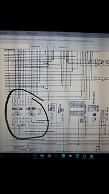

-
Here is what I'm talkinh about per page 9 of "EFEC" in the fsm, sorry for the janky quality
'86 NA2T: Cone filter, 3 in. turbo back, poly engine mounts, stock t3, tokico 5-ways, rattle canned engine bay, etc etc
"As I lay rubber down the street, I pray for traction I may keep, and if I do begin to slide, please dear God protect my ride! - Amen!!!!" -
unplug the ecu and see if you still have 12v to both. if you do, something shorted somewhere. but who cares, run a single new wire from the ecu to the coil and be done with it, way easier than trying to find where it happened.Hmmm, Whats next?
Full Size Bronco, smashing shit.
84ZXT -
I ran 2 new wires, one off pin 3 and one off pin 5, to the ptu and still has the same issue…which makes no sense to me. I will try running a new ground as well tomorrow when I get the chance to work on it
I leave for school on Monday so I only have a few more days to get this figured out…hooray.
'86 NA2T: Cone filter, 3 in. turbo back, poly engine mounts, stock t3, tokico 5-ways, rattle canned engine bay, etc etc
"As I lay rubber down the street, I pray for traction I may keep, and if I do begin to slide, please dear God protect my ride! - Amen!!!!" -
On the schematic diagram (EFEC-92) the connector has a circle with a number in it, that's an ID for the connector. You then ref. EL for harness connector locations.
So, The coil and PTU go through Connector 83M, we see on EL-182 it's location. You can skip inspecting that connector (83M) by confirming continuity at the coil/ptu terminals and the ECU plug. If you confirm good continuity you can safely assume there is a input/output signal issue or a faulty component.
You're correct to say if you have good pulse signal at the coil that the PTU and CAS is working correctly. You're also correct that the coil should see 12V/12V on 1/2 pins.
Don't give up bro, these solutions usually turn out to be very simple fixes. Can you provide any background on any work performed close to the origin of this problem? is your main ground near the starter clean and secure? If you hook up a timing light with the #1 plug in, plug wire connected, and crank the engine does the gun pick up any EMF signal?
I highly, highly doubt it's an ECU issue, but EFEC-139 to 142 has ECU signal info and values
Last edited by 88sinZ; 08-10-2016, 08:32 PM. -
88sinZ, which fsm are you looking at? The one I downloaded for 1986 Nissan 300zx doesn't have an EFEC 139-142…it ends at 109
'86 NA2T: Cone filter, 3 in. turbo back, poly engine mounts, stock t3, tokico 5-ways, rattle canned engine bay, etc etc
"As I lay rubber down the street, I pray for traction I may keep, and if I do begin to slide, please dear God protect my ride! - Amen!!!!" -
is it possible that running an aftermarket ignition system like MSD 6AL will just bypass this stock system and fix the issue? I'm not really familiar on how you run an aftermarket ignition system as ive never done one, but id assume you just need a good ignition signal from the ECU (which I have) and a good switch power and ground, correct?
Because In all honestly, this is really mindf****** me…I ran my own 2 wires off the pins 3 and 5 to the ptu so now I have 12v switched power at the ptu and a confirmed good ground, I have 12 v switched power (from the same blue wire) going to the coil, and I have ECU signal pulse at the coil as well. The coil and ptu are both brand new, along with trying other numerous coils and ptu's. It makes no sense. There is definitely a short somewhere in the stock ignition wiring or something, but ive completely bypassed it by running my own wires. checked as many grounds as I possibly could including the main ground at the starter.
Last edited by zlover23; 08-11-2016, 04:51 PM.
'86 NA2T: Cone filter, 3 in. turbo back, poly engine mounts, stock t3, tokico 5-ways, rattle canned engine bay, etc etc
"As I lay rubber down the street, I pray for traction I may keep, and if I do begin to slide, please dear God protect my ride! - Amen!!!!" -
I like to reference the 1989 FSM, as it's the most up to date revision - disregarding the year differences. But the PDF available online has a horrible flash-through-scan-job. So i normally turn to the 1988 FSM and proof read with the '89. NICO club has hosted FSM's for viewing or download.Originally posted by zlover23 View Post
But first - chill out, take a day off and just tinker/read eyeball your harness, i understand your on a time constraint. Print off a few DTC troubleshooting pages and ID some locations and pins. Plan an attack and take some notes.
I know it sucks, but we've got to ensure that the steps are followed correctly, the process in the FSM *will* locate your problem.. it just takes some tedious grunt work on your part. You *will* find the cause, ya gotta do the cooking by the book to make a pretty cake bruh.
Be careful jumping wires, you don't want to fry a diode. Don't sweat man, step back and try to go step by step, have any electronic guys that would lend you a hand/eye?
Running a 6AL uses the coil terminal wires, so if there's any issue feeding the coil an aftermarket system will not work. The OE coil is pretty hot by standard anyways.Last edited by 88sinZ; 08-11-2016, 09:48 PM. -
When did you do your NA2T work? Did you use the Turbo Harness or the NA Harness. I can't remember right off hand the exact pin changes I had to make at the harness connector you are showing in your image, but they had to be done for me to get spark after doing the swap, I remember them specifically having to do with pins 3 & 5 as well as a few others had to be changed at the same location. The physical location of the plug is right above the ECU. On the EFI Harness you have the three plugs that plug into the ECU and then one more that plugs right above the ECU into the main harness which then routes to your ptu, coil etc. Just had to look at the wiring diagrams and make note of the differences in pin placement for "E" or "ET" -
if you remove the distributor, ground it, go key on engine off, hook a noid light up to an injector connector, and spin the distributor by hand (spin by the gear, not the rotor, so u dont get shocked) does it pulse the noid light on the injector?
Also, do you have access to a scope to scope the CAS signal and primary signal to the coil?Ride it like you stole it…
1986 300zx NA2T - CM 3" turbo back, Pathy 3.0 Engine, Custom cold air intake, 255lph Walboro, T3 turbo, 90 shot of nitrous, 30A trans, 88t LSD, Poly everywhere, SS brakelines. 288whp 336wtq
2001 YZF600 - Sold for Nitrous and Exhaust Upgrade…
1993 Toyota Corolla - The invincible daily driver, off to greener pastures.
2002 Nissan Maxima SE - New daily driver -
Wait a second, you have no spark and the fuel pump isn't priming when you go key on? Check power going to the computer, the wiring for my ECM relay went out on my car, I had to rewire power to my computer.Ride it like you stole it…
1986 300zx NA2T - CM 3" turbo back, Pathy 3.0 Engine, Custom cold air intake, 255lph Walboro, T3 turbo, 90 shot of nitrous, 30A trans, 88t LSD, Poly everywhere, SS brakelines. 288whp 336wtq
2001 YZF600 - Sold for Nitrous and Exhaust Upgrade…
1993 Toyota Corolla - The invincible daily driver, off to greener pastures.
2002 Nissan Maxima SE - New daily driver

Copyright © 2006–. All rights reserved. Privacy Policy